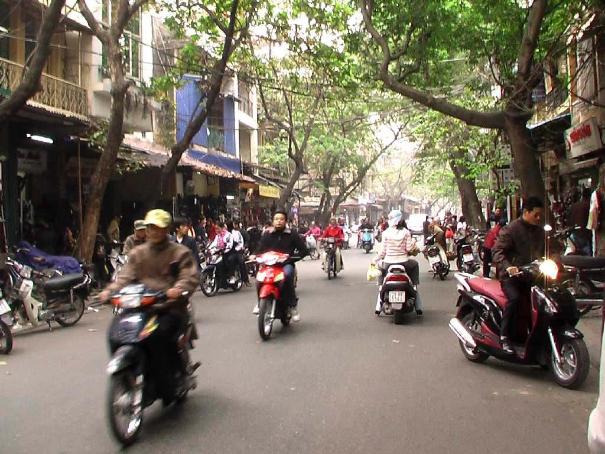
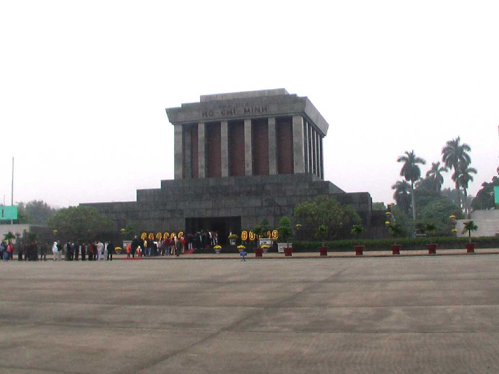
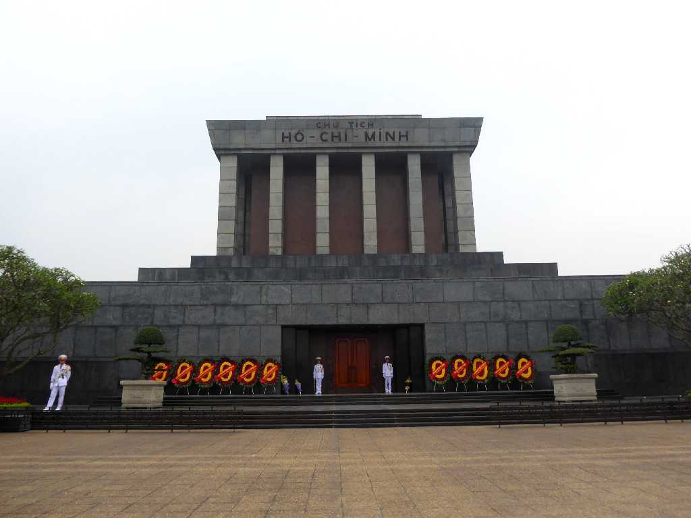
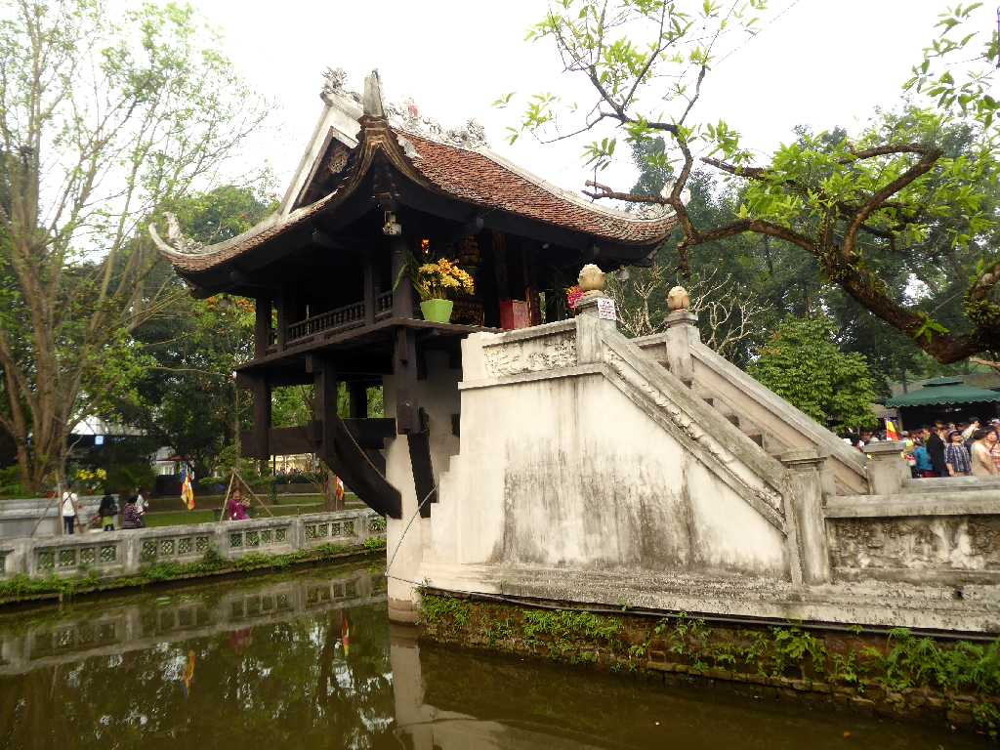
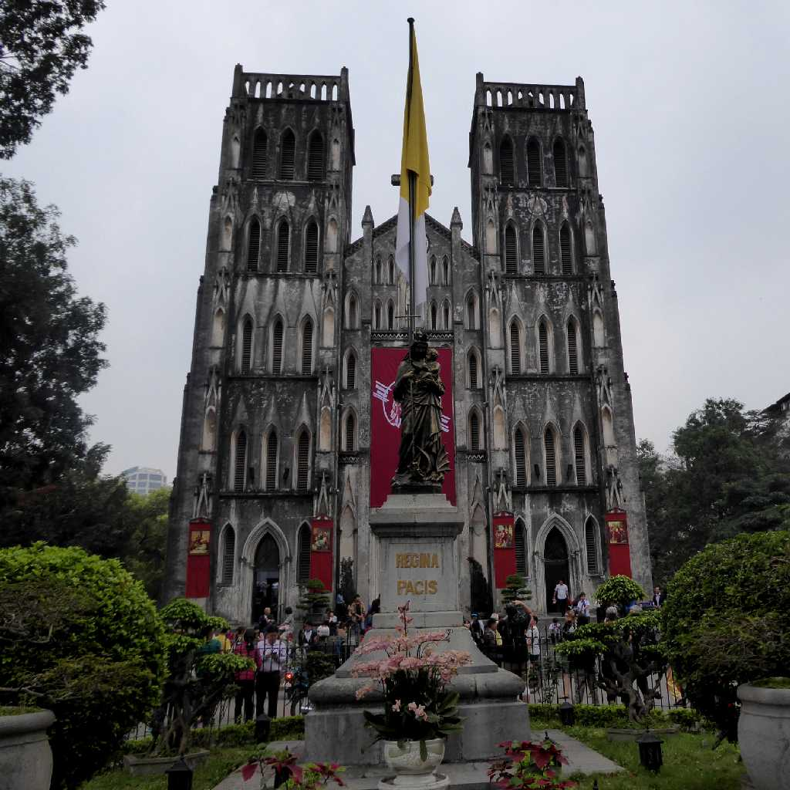
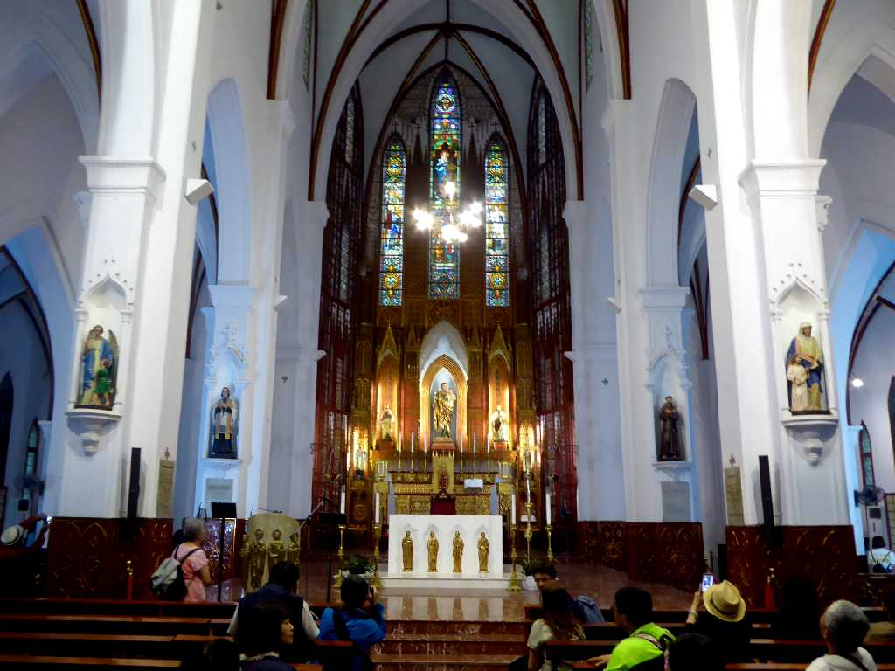
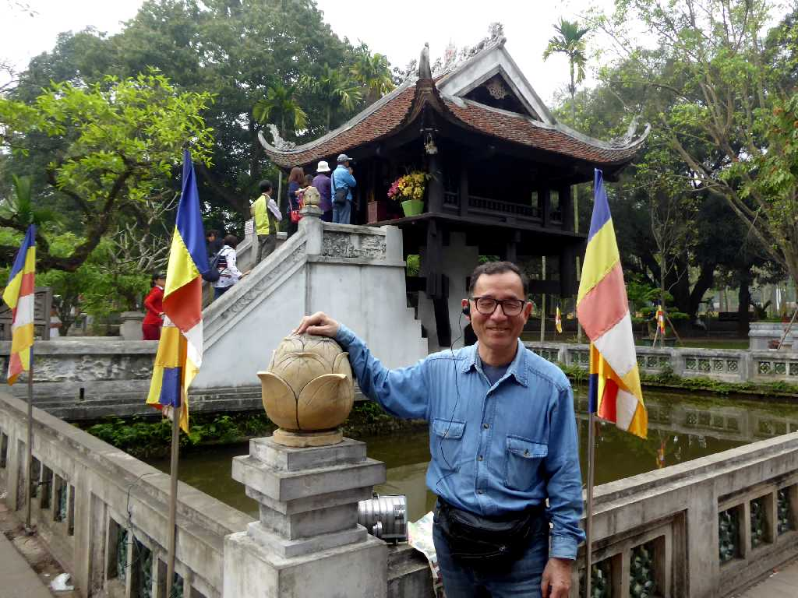

Hà Nội 河内
７世紀ごろからベトナムの中心都市となり１１世紀の李朝成立以降１９世紀初めまで王都として栄えた
Hoan Kiem Lake Hà Nội 河内 還剣湖
市内には１０余りの湖沼が点在し特に旧市街中心の還剣湖は憩いの場を提供してくれる

Ho Chi Minh Mausoleum
ベトナムの民族解放と独立のために南北統一に生涯をかけたベトナム国民の父として敬愛されるホーチミンの亡骸が眠る廟

Ho Chi Minh Mausoleum Hà Nội
１２年ぶりｌの再訪問で衛兵の交替を観た

Chùa Một Cột Hà Nội
一柱寺は１１世紀に創られた仏教寺院で池の中にある一本の柱で支えられた小さなお堂は太宗が見た蓮華の上で子供を抱いた観音菩薩の夢を実現しようと建てたと云われている

St. Joseph Cathedral Hà Nội

Altar St. Joseph Cathedral

March 25 2018 Chùa Một Cột Hà Nội
ハロン湾からメコンデルタまでベトナムを縦断する２,０００ｋｍの旅が始まる